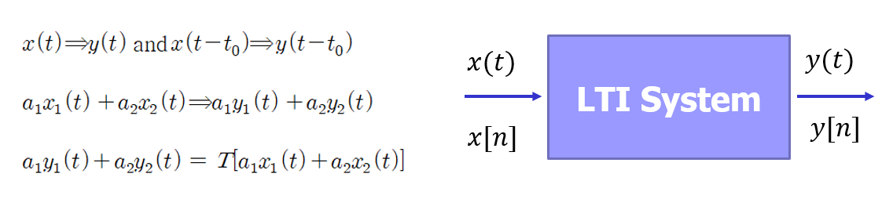
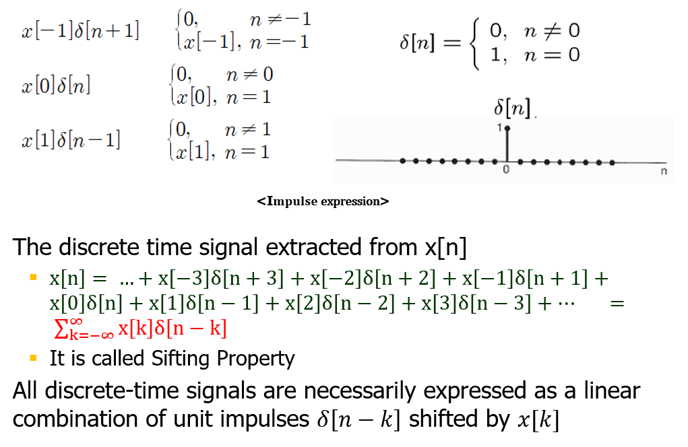
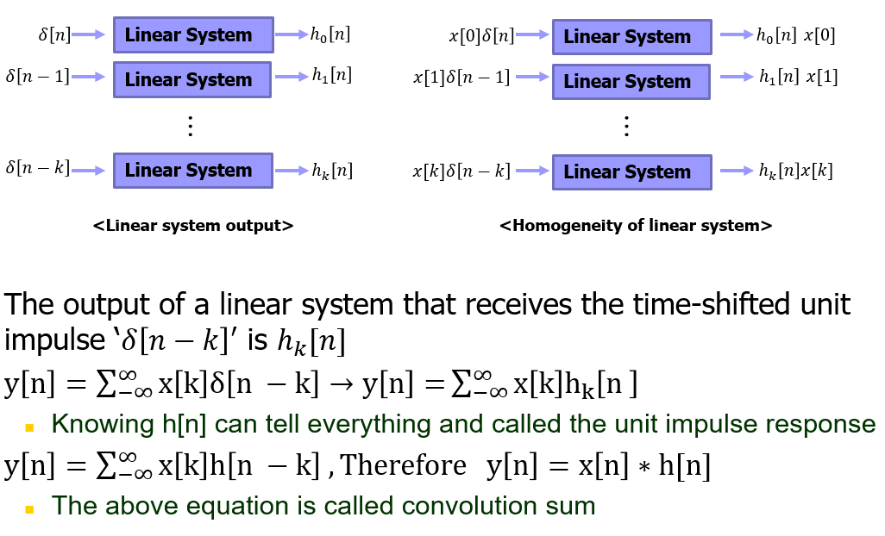
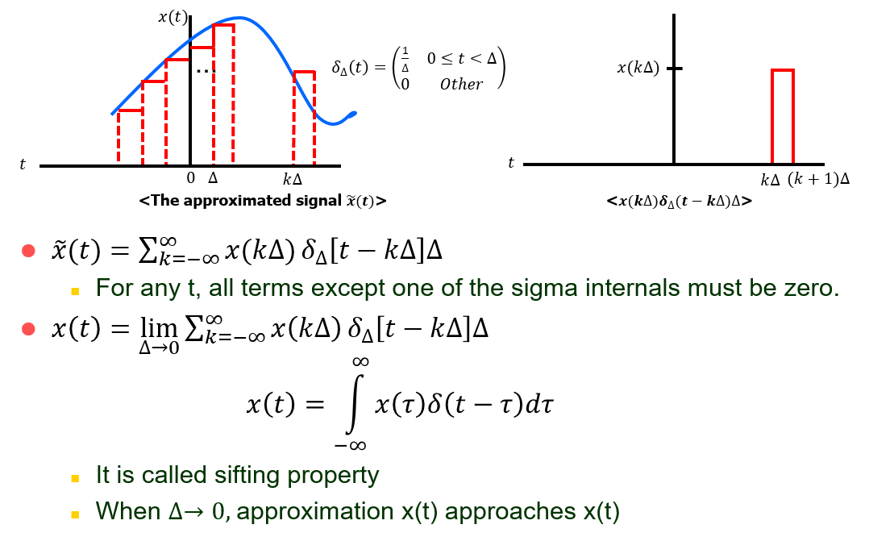
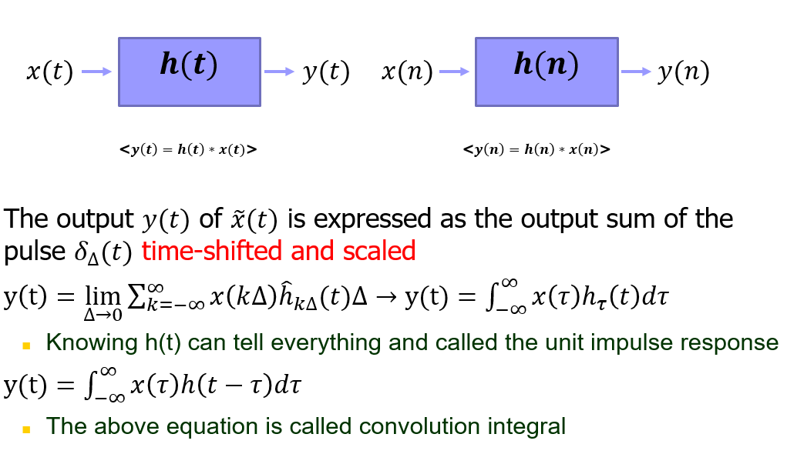

Study
Study list
Research
My Research
LTI 시스템
Linearity Time Invarient System
LTI System Property: Linearity and Time Invariant
LTI시스템에서 가장 중요한 속성 2가지는 Time Invariant와 Linearity입니다.
왜냐하면 현실시스템에서 가장 많이 사용하고, 수학적으로 분석이 가장 용이하기 때문입니다.

LTI System Property: Linearity and Time Invariant
예를 들어, 다음과 같은 수식이 있을 때, 결국 이 모든 것의 합은 –1과 1사이 범위의 n은 x[n]에서 추출한 이산시간 신호가 됩니다.
만약 x[n]에서 모든 정수 n에 대해 추출하면, 두 번째 점의 유도식에 따라 다음과 같은 공식 즉 Sigting Property를 얻게 됩니다.
예를 들어, x[n0]를 구한다했을 때, n0가 아닌 델타[n-k]는 모두 0이 되어 사라지고 오로지 n0인 델타[n-k]만 선별되어지기 때문에 sifting property라고 부릅니다.
결국 모든 이산시간 신호는 가중값이 x[k]인 시간 이동된 단위 임펄스 델타[n-k]의 일차결합으로 반드시 표현됩니다.

The Convolution Sum
시간이동된 단위임펄스 델타[n-k]를 입력받은 선형시스템 출력은 hk[n]이라고 합시다.
그러면 그림처럼 될 것 입니다.
결국, 모든 정수 k에 대하여 시간 이동된 단위 임펄스 응답 hk[n]만 알면 x[n]이 주어졌을 때 y[n]을 알 수 있게 되는데요.
이 때 LTI시스템에선 시불변 적이기 때문에 델타[n-k]의 출력은 델타[n]의 출력을 k만큼 시간이동 한 것과 같습니다.
그래서 편의적으로 hk[n]을 h[n-k]라고 표현하면, 세 번째 점과 같은 식이 나오며 h[n]만 알면 모든 것을 알 수 있습니다.
이러한 h[n]을 단위임펄스 응답이라고 부릅니다.

Continuous-Time LTI System
연속시간 LTI시스템도 특정 점에서 무한한 값을 가지기 때문에 다루는데 있어 어렵지만 마찬가지로 중첩으로 표현가능 합니다.
왼쪽그림과 같이 연속신호를 계단형태로 근사할 수 있는데, 그림의 조건을 이용하면 근사신호 x(t)를 오른쪽 이미지처럼 표현할 수 있습니다.
따라서 첫 번 째 점이 임의 t를 위해 시그마 내부의 한 점을 제외한 모든 항이 0으로 표현되고, 델타를 0으로 보낼수록 근사치x(t)는 x(t)에 가까워지는데요.
결국, 극한과 시그마가 같이 있을 때 적분형태가 되고, 연속시간 단위 임펄스의 선별속성이라 부릅니다.

결국 선형시스템의 경우, 근사신호 𝑥(𝑡)의 출력 𝑦(𝑡) 는 반드시 시간이동되고 스케일링 되어진 펄스 𝛿∆(𝑡)출력들의 합으로 표현가능 합니다.
또한 이산시간시스템과 유사한 것처럼 h(t)만 알면 모든 것을 알 수 있고,
이것은 세 번째 공식과 같이 변형 가능하며 이 때 h(t)를 단위임펄스 응답이라 부릅니다.
